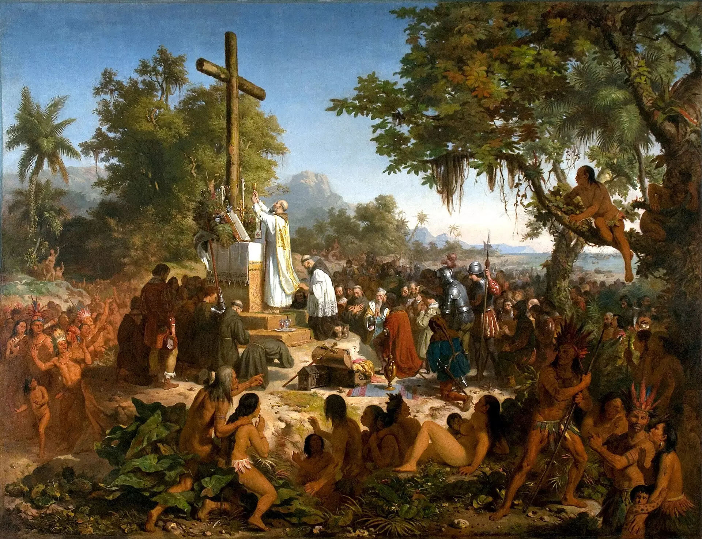
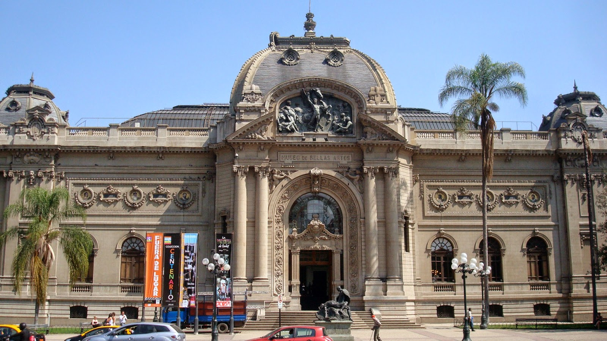

O quadro Primeira Missa, pintado por Victor Meireles em 1860, retrata um momento histórico importante para o Brasil: a primeira missa celebrada pelos portugueses no Brasil, no dia 26 de abril de 1500, logo após a chegada de Pedro Álvares Cabral à terra brasilis. A cena é ambientada em uma praia, com a presença de figuras como o próprio Cabral, indígenas assistindo à missa e padres. A pintura tem uma carga simbólica forte, pois, ao representar o encontro entre os portugueses e os nativos, destaca o início da colonização e a imposição da cultura europeia sobre os povos indígenas. A obra também reflete a ideia de uma "cristianização" do Brasil, que era vista como um dos objetivos da colonização. Meireles apresenta a missa como um evento civilizador, com destaque para a figura do clérigo celebrando o rito. O estilo da pintura é acadêmico, com um grande realismo nas figuras humanas e na paisagem. A obra tem grande valor histórico e cultural, sendo considerada um marco na pintura do período romântico no Brasil.
O Museu Nacional de Belas Artes (MNBA) é um importante museu localizado no Rio de Janeiro, Brasil. Fundado em 1938, o museu abriga uma vasta coleção de obras de arte, com destaque para a pintura, escultura e gravura, representando tanto a arte brasileira quanto a internacional. Seu acervo inclui peças que vão desde o período colonial até o contemporâneo, com ênfase em artistas como Cândido Portinari, Tarsila do Amaral, Di Cavalcanti e Portinari. O museu também conta com importantes obras de artistas europeus, como Rembrandt e Goya. Além disso, o MNBA tem um papel importante na promoção de exposições temporárias, atividades culturais e educacionais, sendo um dos centros culturais mais visitados do Brasil. O prédio que abriga o museu é um exemplo de arquitetura neoclássica, com amplos espaços e galerias que proporcionam uma experiência imersiva no mundo da arte.

Faça um comentario
Comentar como:
Esse site é protegido por reCAPTCHA e pelo google politicas de privacidade e termos de serviços.